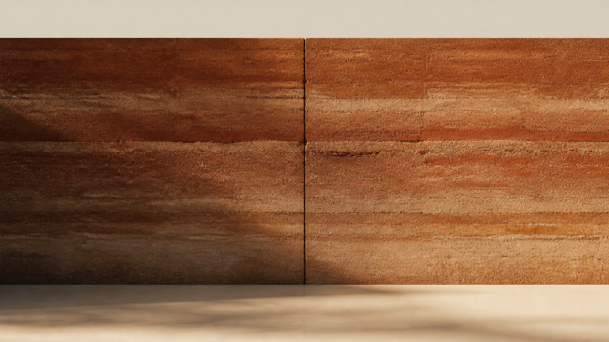

Soil is read, not chosen.
A site is a sentence already written. The studio's first move is to listen for its grain: sand, silt, clay, the ratio of each weighed in the palm before any drawing is made.
A soil-architecture practice composing monumental brand work in clay-thick type, restraint, and one warm seam.
Earth, well-rammed, outlasts the hand that rammed it. We do not decorate. We compact, pressing the brief downward through tonal strata until only the seam remains: a slow, warm vertical that carries every page that follows.
Every project here is the same wall, lit from a different hour. Material, type, seam. Nothing else.

A site is a sentence already written. The studio's first move is to listen for its grain: sand, silt, clay, the ratio of each weighed in the palm before any drawing is made.
We design the mould as carefully as the wall. Tolerances are kept monumental: a single seam, set true, that the eye reads as composure rather than detail.
Once tamped, earth resolves. The bicolor mosaic of moisture and mineral compresses into a single warm monolith, and the seam, the mark of our hand, quiets into the surface.
| Atlas | Rammed-earth tolerancesPlate index, 24 folios |
|---|---|
| Essay | The seam, a vertical literature6,400 words |
| Report | Mould-makers of the plateauPhotographs, in colour |
| Talk | On compaction as a moral actIn conversation with H. Aydın |
| Glossary | Sediment terms, A to MReference, illustrated |
We work with three materials and one ideology: clay, type, and time. The studio publishes a quarterly field journal because a wall deserves a reader, not a buyer.
Founded on the plateau, 2018. Two architects, one editor, one mason.